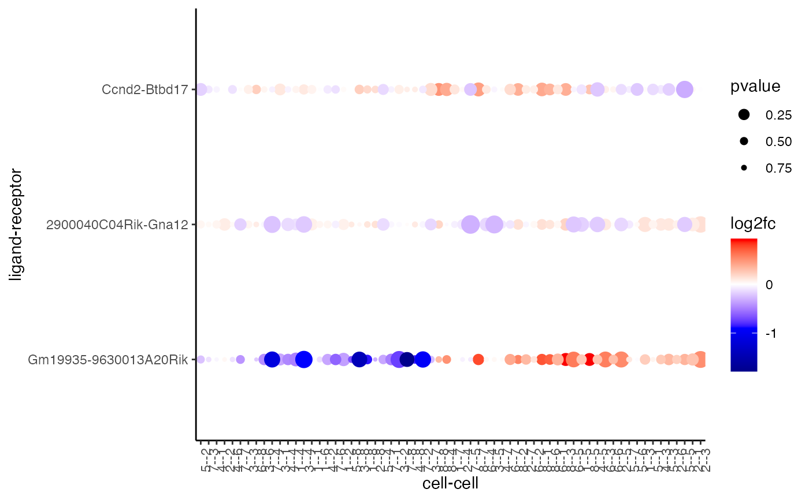

Plots dotplot for ligand-receptor communication scores in cell-cell interactions
plotCCcomDotplot(
gobject,
comScores,
selected_LR = NULL,
selected_cell_LR = NULL,
show_LR_names = TRUE,
show_cell_LR_names = TRUE,
cluster_on = c("PI", "LR_expr", "log2fc"),
cor_method = c("pearson", "kendall", "spearman"),
aggl_method = c("ward.D", "ward.D2", "single", "complete", "average", "mcquitty",
"median", "centroid"),
dot_color_gradient = NULL,
gradient_style = c("divergent", "sequential"),
show_plot = NULL,
return_plot = NULL,
save_plot = NULL,
save_param = list(),
default_save_name = "plotCCcomDotplot"
)giotto object
communication scores from exprCellCellcom
or spatCellCellcom
selected ligand-receptor combinations
selected cell-cell combinations for ligand-receptor combinations
show ligand-receptor names
show cell-cell names
values to use for clustering of cell-cell and ligand-receptor pairs
correlation method used for clustering
agglomeration method used by hclust
character. continuous colors to use. palette to use or vector of colors to use (minimum of 2).
either 'divergent' (midpoint is used in color scaling) or 'sequential' (scaled based on data range)
logical. show plot
logical. return ggplot object
logical. save the plot
list of saving parameters, see showSaveParameters
default save name for saving, don't change, change save_name in save_param
ggplot
g <- GiottoData::loadGiottoMini("visium")
#> 1. read Giotto object
#> 2. read Giotto feature information
#> 3. read Giotto spatial information
#> 3.1 read Giotto spatial shape information
#> 3.2 read Giotto spatial centroid information
#> 3.3 read Giotto spatial overlap information
#> 4. read Giotto image information
#>
#> checking default envname 'giotto_env'
#> a system default python environment was found
#> Using python path:
#> "/usr/bin/python3"
comScores <- exprCellCellcom(g,
cluster_column = "leiden_clus",
feat_set_1 = c("Gm19935", "2900040C04Rik", "Ccnd2"),
feat_set_2 = c("9630013A20Rik", "Gna12", "Btbd17")
)
plotCCcomDotplot(gobject = g, comScores = comScores, show_plot = TRUE)
